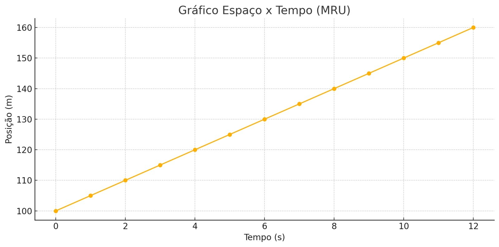
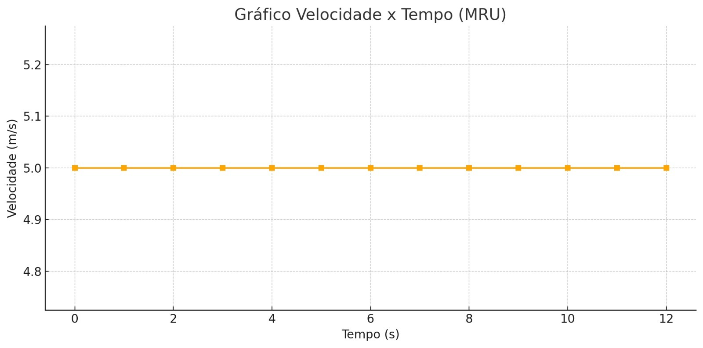

MRU
Movimento Retilíneo Uniforme
O MRU acontece quando um objeto se desloca ao longo de uma trajetória reta, sem curvas ou desvios, com velocidade constante e sem mudança de direção. Com isso, o objeto percorre distâncias iguais em intervalos de tempo iguais. Como a velocidade não varia, a aceleração é nula.
Velocidade > 0 (constante)
Aceleração = 0
Exemplos
- Escada rolante: funciona com uma velocidade contínua em linha reta levando pessoas.
- Trem (com trilhos em direção sempre reta): atua com velocidade contínua e linha reta.
Fórmula
S = S0 + vt
No MRU o espaço aumenta de forma proporcional ao tempo:

Já a velocidade permanece constante conforme o tempo passa:
